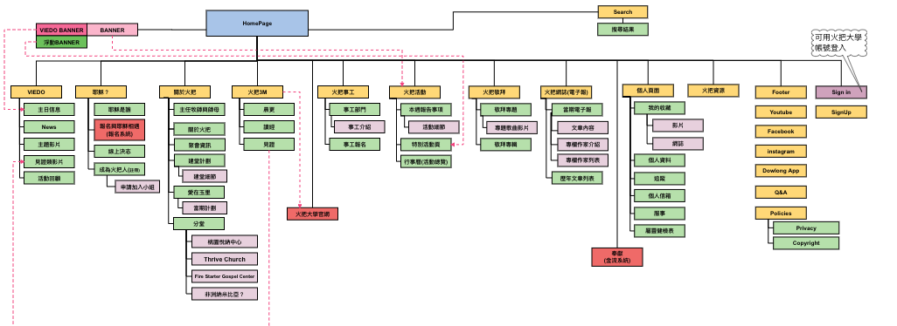
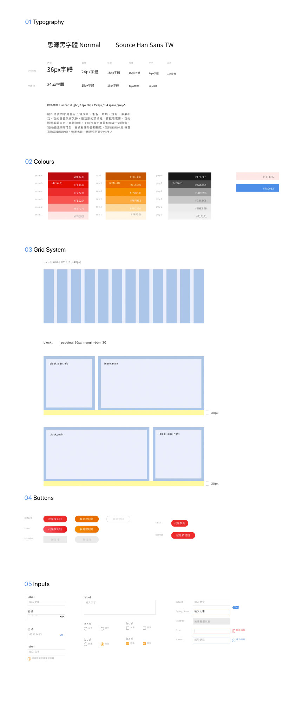

Role
- Product Strategy
- Visual Design
- Wireframing
- Design System
- Front-end Developer
Tools
- Sktech
- Zeplin
- Cacoo
- W3C
Platforms
Desktop, Mobile web
Time
2018
THE CLIENT
The Torch Church has been in existence for 13 years, and their number has grown from 200 to nearly 2,000. And the website needs to be updated again.
THE CHALLENGE
The old official website has caused many problems. E.g.
- Unable to support various devices and cause difficulty for users.
- At present, the number of members has increased, and a member platform has been established to manage.
- Different activities and articles will be promoted in the future according to the age and identity of the members.
- The official website should have the function of a template, and the administrator can create a new page according to the page.
Original Pages

PROCESS
- Research and Rough idea
- Plan Schedule
- Sitemap
- Wireframe and Flow Chart
- Design Guild
- Visual Features
- Front-end Development
- Back-end Development
RESEARCH AND IDEA
We started by discussing the planning of the entire site, and hope that customers can add different components to add new pages. Since I have previously executed CMS management projects before, and we also refer to many different examples, I personally studied it. For example: Ant design (link1), Bootstrap(link2), UI Pattern(link3). I really love the concept of Ant design.
Me and strategists,developers that we all like the concept of LEGO which combine the random pages through different components and modules. So I discussed it with the design developer and sorted out the features that the new site needed. The following two are some of the key points of our design direction.
- Establish a combination of components and modules
- Responsive design
- Establish Design Guildline
PROCESSING
Sitemap
Rough Wireframe and Flow Chart
We have categorized main pages and minor pages. At the same time, I am responsible for planning web layouts and modules. Layout refers to the web layout ,ex: one column page or two columns page. In addition, sort out some of the features we often need. Ex: Slideshow, Breadcrumb, Forms, Pagination...etc.
And, Our Developer they're planning the flow chart to make sure everyone can understand each pages's situation.
For example, user wants to login the members. If the member have an account, you will be divided into two types: correct input and incorrect input. So that I need to record this information. Because I need to design the function.
Design System
I responsible for Responsive UI which a display that can be adapted to any device creates a positive user experience that is consistent across all systems.
You can see more Design System detail: Link
Visual Features


Currently this site is still in processing, you can only see a part of the pages. Link